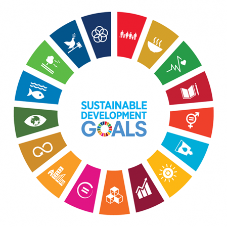

17 Goals of Sustainable Development



The 2030 Agenda for Sustainable Development, unanimously adopted by all United Nations Member States in 2015, serves as a collective roadmap towards global peace, prosperity, and sustainability. Central to this agenda are the 17 Sustainable Development Goals (SDGs), which demand immediate action from all nations, both developed and developing, through international collaboration. These goals underscore the interconnectedness of poverty eradication, enhanced healthcare and education, reduced inequality, and economic advancement, alongside concerted efforts to combat climate change and safeguard our natural ecosystems, including oceans and forests.
The Sustainable Development Goals (SDGs) are the culmination of years of collaborative efforts between countries and the United Nations, including the UN Department of Economic and Social Affairs. This journey traces back to the Earth Summit in Rio de Janeiro in June 1992, where Agenda 21 was embraced by over 178 nations, outlining a global strategy for sustainable development to enhance human well-being and safeguard the environment.